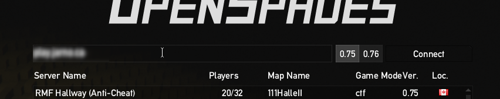

OpenSpades contains non-free assets that were copied from the original Ace of Spades games. The creators of OpenSpades were unabled to contact the authors, so these assets were never released under an open licence.
Fortunately, there is a drop-in replacement for these assets available. All models have been recreated under a CC0 licence and the sound effects have been replaced by mostly CC0 equivalents with a few exceptions that are CC-BY.
When you start the game you will immediately enter the server browser. If you click on "Setup" at the bottom of the screen, you can set your in-game name. Click on "Back" to return to the server browser.
To connect to the server, type {{ site.content.domain_name }} in the input field at the top and click on the "Connect" button to the right.
